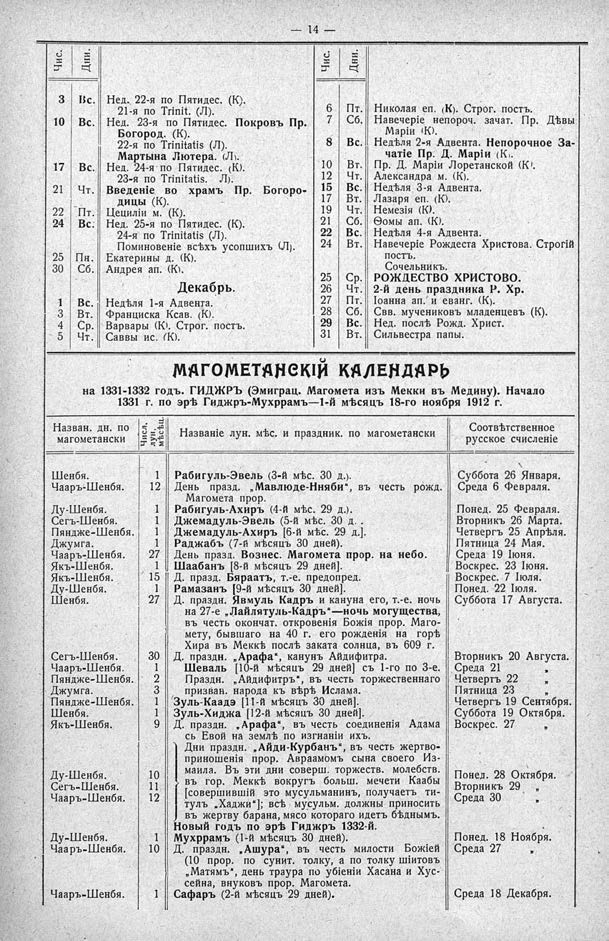

Лист источника 60
Скан

Распознанный текст
- 14 -
Чис. Дни. Чис. Дни.
3 Вс. Нед. 22-я по Пятидес. (К).
21-я по Trinit. (Л).
10 Вс. Нед. 23-я по Пятидес. Покровъ Пр.
Богород. (К).
22-я по Trinitatis (Л).
Мартына Лютера. (Л).
17 Вс. Нед. 24-я по Пятидес. (К).
23-я по Trinitatis. Л).
21 Чт. Введеніе во храмъ Пр. Богоро-
дицы (К).
22 Пт. Цециліи м. (К).
24 Вс. Нед. 25-я по Пятидес. (К).
24-я по Trinitatis (Л).
Поминовеніе всѣхъ усопшихъ (Л).
25 Пн. Екатерины д. (К).
30 Сб. Андрея ап. (К).
Декабрь.
1 Вс. Недѣля 1-я Адвента.
3 Вт. Франциска Ксав. (К).
4 Ср. Варвары (К). Строг. постъ.
5 Чт. Саввы ис. (К).
6 Пт. Николая еп. (К). Строг. постъ.
7 Сб. Навечеріе непороч. зачат. Пр. Дѣвы
Маріи (К).
8 Вс. Недѣля 2-я Адвента. Непорочное За-
чатіе Пр. Д. Маріи (К).
10 Вт. Пр. Д. Маріи Лоретанской (К).
12 Чт. Александра м. (К).
15 Вс. Недѣля 3-я Адвента.
17 Вт. Лазаря еп. (К).
19 Чт. Немезія (К).
21 Сб. Ѳомы ап. (К).
22 Вс. Недѣля 4-я Адвента.
24 Вт. Навечеріе Рождеста Христова. Строгій
постъ.
Сочельникъ.
25 Ср. РОЖДЕСТВО ХРИСТОВО.
26 Чт. 2-й день праздника Р. Хр.
27 Пт. Іоанна ап. и еванг. (К).
28 Сб. Свв. мучениковъ младенцевъ (К).
29 Вс. Нед. послѣ Рожд. Христ.
31 Вт. Сильвестра папы.
МАГОМЕТАНСКІЙ КАЛЕНДАРЬ
на 1331-1332 годъ. ГИДЖРЪ (Эмиграц. Магомета изъ Мекки въ Медину). Начало
1331 г. по эрѣ Гиджръ-Мухррамъ-1-й мѣсяцъ 18-го ноября 1912 г.
Назван. дн. по магометански Числ. лун. мѣсяц. Названіе лун. мѣс. и праздник. по магометански Соотвѣтственное русское счисленіе
Шенбя. 1 Рабигуль-Эвель (3-й мѣс. 30 д.). Суббота 26 Января.
Чааръ-Шенбя. 12 День празд. „Мавлюде-Нняби“, въ честь рожд. Магомета прор. Среда 6 Февраля.
Лу-Шенбя. 1 Рабигуль-Ахиръ (4-й мѣс. 29 д.). Понед. 25 Февраля.
Сегъ-Шенбя. 1 Джемадуль-Эвель (5-й мѣс. 30 д.). Вторникъ 26 Марта.
Пяндже-Шенбя. 1 Джемадуль-Ахиръ [6-й мѣс. 29 д.]. Четвергъ 25 Апрѣля.
Джумга. 1 Раджабъ (7-й мѣсяцъ 30 дней). Пятница 24 Мая.
Чааръ-Шенбя. 27 День празд. Вознес. Магомета прор. на небо. Среда 19 Іюня.
Якъ-Шенбя. 1 Шаабанъ [8-й мѣсяцъ 29 дней]. Воскрес. 23 Іюня.
Якъ-Шенбя. 15 Д. празд. Бяраатъ, т.-е. предопред. Воскрес. 7 Іюля.
Ду-Шенбя. 1 Рамазанъ [9-й мѣсяцъ 30 дней]. Понед. 22 Іюля.
Шенбя. 27 Д. праздн. Явмуль Кадръ и кануна его, т.-е. ночь на 27-е „Лайлятуль-Кадръ“—ночь могущества, въ честь окончат. откровенія Божія прор. Маго- мету, бывшаго на 40 г. его рожденія на горѣ Хира въ Меккѣ послѣ заката солнца, въ 609 г. Суббота 17 Августа.
Сегъ-Шенбя. 30 Д. праздн. „Арафа“, канунъ Айдифитра. Вторникъ 20 Августа.
Чааръ-Шенбя. 1 Шевалъ [10-й мѣсяцъ 29 дней] съ 1-го по 3-е. Среда 21 „
Пяндже-Шенбя. 2 Праздн. „Айдифитръ“, въ честь торжественнаго призван. народа къ вѣрѣ Ислама. Четвергъ 22 „
Джумга. 3 Пятница 23 „
Пяндже-Шенбя. 1 Зуль-Каадэ [11-й мѣсяцъ 30 дней]. Четвергъ 19 Сентября.
Шенбя. 1 Зуль-Хиджа [12-й мѣсяцъ 30 дней]. Суббота 19 Октября.
Якъ-Шенбя. 9 Д. праздн. „Арафа“, въ честь соединенія Адама съ Евой на землѣ по изгнаніи ихъ. Воскрес. 27 „
Дни праздн. „Айди-Курбанъ“, въ честь жертво- приношенія прор. Авраамомъ сына своего Из- маила. Въ эти дни соверш. торжеств. молебств. въ гор. Меккѣ вокругъ больш. мечети Каабы [совершившій это мусульманинъ, получаетъ ти- тулъ „Хаджи“]; всѣ мусульм. должны приносить въ жертву барана, мясо котораго идетъ бѣднымъ.
Новый годъ по эрѣ Гиджръ 1332-й.
Ду-Шенбя. 10 Понед. 28 Октября.
Сегъ-Шенбя. 11 Вторникъ 29 „
Чааръ-Шенбя. 12 Среда 30 „
Ду-Шенбя. 1 Мухррамъ (1-й мѣсяцъ 30 дней). Понед. 18 Ноября.
Чааръ-Шенбя. 10 Д. праздн. „Ашура“, въ честь милости Божіей (10 прор. по сунит. толку, а по толку шіитовъ „Матямъ“, день траура по убіеніи Хасана и Хус- сейна, внуковъ прор. Магомета. Среда 27 „
Чааръ-Шенбя. 1 Сафаръ (2-й мѣсяцъ 29 дней). Среда 18 Декабря.